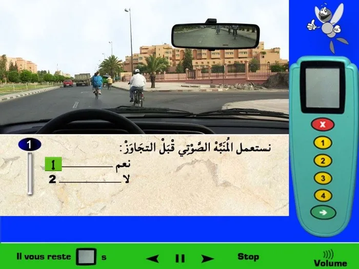

← الرئيسية
سلسلات التّجاوز والتّقابل
1

العلامة الطّرقية فهي تعمي إنتهاء منع التّجاوز الذي كان سابقا والان يمكنني التّجاوز، التّشوير الأفقي الخط المتقطّع يسمح لي بالتّجاوز لكن كما نلاحظ في الصورة فيوجب ضباب كثيف والرؤية غير واضحة في الأمام، لو قمت بالتجاوز فيمكن أن أتقابل مع عربة قادمة من الإتّجاه المعاكس. إذن في هذه الحالة لا أتجاوز.
2

لكي أقوم بالتّجاوز فدائما أقوم بالتّنبيه، في هذه الحالة يمكنني إستعمال إشارة ضوئية لتنبيه السيّارة التي أمامي على أنني سوف أقوم بتجاوزها.
3

عملية التّجاوز تكون دائما من الجهة اليسرى، لكن يوجد حالة إستثنائية واحدة يمكنني فيها من التّجاوز على اليمين، وهي عندما تكون عربة تستعد للإنعطاف على اليسار مثل الصورة، مثل هذه الحالة يمكنني التّجاوز على اليمين.
4

كما نلاحظ في المرآة الدّاخلية للسيارة فيوجد شخص يقوم بإستعمال يده لكي يعلمني على أنه سوف يقوم بعملية التّجاوز (يمكن أن مؤشر تغيير الإتّجاه لا يعمل لديه وقام بإستعمال يده)، لذلك عندما تكون هنالك عربة تستعد لعملية التّجاوز فلا أقوم بالتّجاوز، ولا يمكنني تشغيل مؤشر تغيير الإتّجاه لأنه لن أقوم بالتّجاوز لذلك لن أقوم بتشغيل. إذن في هذه الحالة لا يمكنني تجاوز هؤلاء الرّاجلين ولا أقوم بتشغيل مؤشر تغيير الإتّجاه.
5

كما توضّح الصورة فيوجد عربة من الخلف تستعد للتّجاوز إذن لا يمكنني التّجاوز الان، ويجب عليّ إلتزام أقصى اليمين.
6

كما نلاحظ فإن التّشوير الأفقي الخط المتقطّع سوف يصبح متّصل، لذلك لا يمكنني التّجاوز بسرعة، ويجب عليّ الإنتظار.
7

التّشوير الأفقي خط المتّصل، إذن بما بما أن الخط المتّصل فلا يمكنني التّجاوز.
8

داخل التّجمع السّكني لكي أقوم بتجاوز راجل فيجب علينا ترك مسافة جانبية لا تقل عن متر واحد، وخارج التجمع السكني فأقوم بترك مسافة جانبية لا تقل عن متر ونصف، في هذه الحالة فيظهر في الصورة وجود منازل إذن نحن نتواجد داخل تجمع سكني، إذن بما أنني أتواجد داخل تجمع سكني فيحب عليّ ترك مسافة جانبية لا تقل عن متر واحد لكي أقوم بتجاوز هذا الرّاجل. الإجابة الصّحيحة هي رقم 2.
9

في هذه الحالة فإن التّّشوير الأفقي خط متّصل (لا يظهر جيّدا) إذن ممنوع التّجاوز، وبما أنه لن أقوم بالتّجاوز إذن لن أقوم بتشغيل مؤشِّر تغير الإتّجاه.
10

يوجد 2 خطوط على الجهة اليسرى، ودائما الخط الذي يعنيني في مثل هذه الحالات فهو أول خط، الخط الاول بالنسبة لي هو خط متقطّع وبعد ذلك يوجد خط متّصل، الخط المتقطّع هو الأول يعني يمكنني أن أتخطاه. إذن في هذه الحالة الخط الموجود على جهتي اليسرى يمكنني تجاوزه.
11

أقوم بالتّنبيه بإشارة ضوئية لكي أنبّه الراجل أنّني أسير خلفه (بما أن استعمال المنبّه الصوتي ممنوع إستعماله على الرّاجلين) وأيضا لكي تقوم السّيارة التي توجد في الإتّجاه المعاكس بتغيير الأضواء التي تسير بها من أضواء الطّريق إلى أضواء التّقابل، و دائما عند وجود خطر أمامي فأقوم بالإنقاص من السّرعة (الخطر هنا هو الرّاجل الذي يسير على الطّريق)، إذن في هذه الحالة أقوم بالتّنبيه بإشارة ضوئية وأقوم بالإنقاص من السّرعة.
12

العربة التي أمامي فهي متوقّفة ويجب عليّ أن أقوم بتجاوزها لكي أكمل السّير، لكن لا يمكنني التّجاوز الان، توجد سيارة قادمة في الإتّجاه المعاكس. يجب عليّ الإنتظار لكي أقوم بالتّجاوز. إذن في هذه الحالة لا أتّجاوز.
13

يوجد منعرج على اليمين والرؤية غير واضحة، لا يمكنني التّجاوز عندما أتواجد قرب منعرج. إذن في هذه الحالة لا أتجاوز.
14

المرآة الدّاخلية للسيّارة توضّح أنه توجد سيّارة تستعد لتجاوزي. إذن في هذه الحالة لا يمكنني تجاوز هؤلاء الرّاجلين.
15

المرآة الدّاخلية للسيّارة توضّح أنه توجد سيّارة تستعد لتجاوزي. إذن في هذه الحالة لا يمكنني تجاوز سائق الدَّراجة.
16

المرآة الدّاخلية للسيّارة توضّح أنه لا توجد عربة تستعد لتجاوزي. إذن في هذه الحالة بما أنه لا توجد عربة تستعد لتجاوزي والطّريق التي أتواجد فيها فهي ذات إتّجاه واحد إذن يمكنني تجاوز هذه الحافلة. (لا يوجد تشوير يوضّح أنها طريق ذات إتّجاه واحد، لكن لو لاحظت جيّدا في الصورة ففي الجهة الأخرى توجد سيارات قادمة من الإتّجاه المعاكس وهذا يدل على أن هذه الطّريق ذات إتّجاه واحد).
17

يوجد راجل على الطّريق ولكي أقوم بتجاوزه يجب عليّ إنتظار مرور السيّارة التي توجد في الإتّجاه المقابل. إذن في هذه الحالة أنتظر لكي أقوم بالتّجاوز.
18

إستعمال الإشارة الضّوئية لن يكون لها تأثير ولن ينتبه لها سائق الدّراجة ولن يعرف أنني قمت بتنبيهه، غذن في هذه الحالة بما أنني أتواجد خارج التّجمع السكني والمنبّه الصوتي مسموح به إذن أقوم بالتّنبيه بالمنبّه الصّوتي قبل تجاوز صاحب الدرّاجة.
19

المرآة الدّاخلية للسيّارة توضّح أنه توجد سيّارة إسعاف من الخلف وهي في مهمّة إستعجالية، وهذا واضح من خلال الأضواء الحمراء الموجودة فوقها،. إذن بما أن سيارة الإسعاف توجد في مهمّة إستعجالية فالأسبقية لها في المرور أولا. إذن في هذه الحالة أقوم بالإنتظار للتّجاوز.
20

التّشوير الأفقي خط متقطّع فهو يسمح بعملية التّجاوز، لكن لن أقوم بتجاوز هذه السيّارة الان، أولا لأن السيّارة توقفت لإعطاء حق الأسبقية للرّاجل الذي يقوم بقطع الطّريق ويسير فوق ممر الرّاجلين وثانيا لو قمت بالتّجاوز فسوف أرتكب مخالفة لأنه سوف يكون خطر الإصطدام بالراجل ولم أقم بإعطائه حق الأسبقية في المرور. إذن في هذه الحالة التّشوير الأفقي الخط المتقطّع يسمح بالتّجاوز لكن لا يمكنني تجاوز السيّارة الان.
21

الطّريق ذات إتّجاه واحد وهذا واضح من خلال الخط المتّصل أقصى اليسار، وهذا يعني أنه لن توجد عربات قادمة في الإتّجاه المعاكس. إذن لكي أقوم بالتّجاوز على اليسار فدائما أقوم بإستعمال مؤشر تغيير الإتّجاه لليسار، بما أنه نتواجد خارج التّجمع السّكني ونتواجد في النّهار فيمكنني إستعمال منبّه الصوتي للتّنبيه قبل التّجاوز. إذن في هذه الحالة لكي أقوم بالتّجاوز فأقوم بإستعمال مؤشر تغيير الإتّجاه لليسار وأقوم بالتّنبيه بالمنبّه الصّوتي.
22

دائما قبل التّجاوز أقوم بتنبيه العربة التي أمامي بالمنبّه الصوتي أو بإشارة ضوئية (على حسب الحالة)، في هذه الحالة نتواجد في النّهار وخارج التّجمع السّكني إذن المنبّه الصوتي مسموح به لكي أقوم بتنبيه سائق الشاحنة قبل التّجاوز.
23

يوجد عربات من الخلف ويوجد خطر أن تصطدم بي في حالة إذا قمت بالحصر بقوّة، لذلك لا أقوم بالحصر بقوة. إستعمال المنبّه الصوتي فهو منوع داخل التجمّع السكني (كما توضّح الصورة يوجد منازل وهذا يعني على أننا داخل تجمّع سكني) إظافة على أنه إستعمال منبّه الصوتي على الدّراجات فهو ممنوع. وفي حالات الخطر أقوم بالإنقاص من السّرعة، وهنا يوجد خطر سائق الدراجة يسير في وسط الطّريق. إذن في هذه الحالة أقوم بالإنقاص من السّرعة.
24

التّّشوير الأفقي الخط المتّصل يمنعني من التّجاوز. إذن في هذه الحالة لا أقوم بالتّجاوز.
25

لا توجد عربة تستعد لتجاوزي من الخلف، ولا توجد عربة قادمة من الإتّجاه المعاكس، كما أن التّشوير الأفقي الخط المتقطّع فهو يسمح لي بالتّجاوز. إذن في هذه الحالة يمكن لي التّجاوز.
26

نتواجد قرب منعرج والطّريق ذات إتّجاهين يعني توجد عربات قادمة من الإتّجاه المعاكس (لكي أعرف هل الطّريق ذات إتّجاه واحد أو إتّجاهين فأقوم بالتحقق أقصى اليسار هل يوجد خط متّصل أم لا، في هذه الصورة كما نلاحظ في أقصى اليسار لا يوجد أصلا خط وهذا يعني أن الطّريق ذات إتّجاهين)، إذن بما أنه يوجد خطر وجود عربات قادمة من الإتّجاه المعاكس وكذلك نتواجد قرب منعرج إذن لا أقوم بالتّجاوز. (لو كانت الطّريق ذات إتّجاه واحد فيمكنني التّجاوز رغم وجود منعرج لأنه في تلك الحالة لن تتواجد عربات قادمة من الإتّجاه المعاكس).
27

توجد سيارة تستعد لتجاوزي من الخلف، عندما تستعد سيارة لتجاوزي فلا أقوم بالزيادة في السّرعة ولا أقوم بالإنقاص من السّرعة، أحتفظ بالسرعة التي أسير بها وألتزم اليمين. إذن في هذه الحالة ألتزم اليمين.
28

توجد سيارة تستعد لتجاوزي من الخلف، عندما تستعد سيارة لتجاوزي فلا أقوم بالزيادة في السّرعة ولا أقوم بالإنقاص من السّرعة، أحتفظ بالسرعة التي أسير بها وألتزم اليمين. إذن في هذه الحالة أحتقظ بالسّرعة التي أسير بها و ألتزم اليمين.
29

العربة التي أمامي قامت مسبقا بتجاوز الشّاحنة وتستعد للإندماج في مسلكها الخاص بالسير العادي، لكن كما نلاحظ فهي لا تزال في المسلك الخاص بي والمسافة قصيرة بيننا، لذلك يجب عليّ تنبيهها بإشارة ضوئية لكي يقوم سائق العربة بالإنحياز بسرعة إلى مسلكه الخاص. (لا نقوم بالتّنبيه بالمنبه الصوتي، لأن الإشارة الضوئية كافية وأكثر فاعلية من المنبه الصوتي بما أن العربة تتواجد في الإتّجاه المعاكس).
30

إذا قمنا بالمراقبة فإن المرآة الدّاخلية للسيارة تظهر على أنه لا توجد عربات تستعد لتجاوزي، بالنسبة لهذه الطّريق فهي طريق ذات إتّجاه واحد يعني أنه لن أصادف عربات قادمة في الإتّجاه المعاكس (عرفنا ذلك من خلال الخط المتّصل على أقصى اليسار). إذن في هذه الحالة بما أنه لا توجد سيارات تستعد لتجاوزي والطّريق ذات إتّجاه واحد والخط متقطع إذن يمكنني في هذا المنعرج تجاوز هذه الشّاحنة.
31

إستعمال الإشارة الضّوئية للتّنبيه قبل التّجاوز فهو مسموح به دائما، بالنسبة للإستعمال المنبّه الصوتي للتّنبيه فيمكنني إستعماله فقط لو كنت خارج التجمّع السكاني وفي النّهار، في الصورة يتّضح على أنني خارج التجمّع السّكاني وفي النّهار إذن يمكنني إستعمال المنبّه الصوتي للتّنبيه. إذن في هذه الحالة قبل تجاوز الشّاحنة فيمكنني التّنبيه بإشارة ضوئية ويمكنني كذلك التّنبيه بالمنبّه الصّوتي.
32

كما نلاحظ في المرآة الدّاخلية للسيارة فتوجد سيارة تستعد لتجاوزي إذن لا يمكنني تجاوز العربة التي أمامي. عندما تستعد عربة لتجاوزي فدائما أقوم بالإحتفاظ بالسّرعة التي أسير بها (لا أزيد من السّرعة ولا أنقص منها) وأن ألتزم أقصى اليمين. إذن في هذه الحالة لا يمكنني التّجاوز ويجب عليّ إلتزام أقصى اليمين.
33

كما نلاحظ في المرآة الدّاخلية للسيارة فتوجد سيارة تستعد لتجاوزي وقامت بتشغيل مؤشر تغيير الإتّجاه إذن لا يمكنني الزّيادة في السّرعة وتجاوز العربة التي أمامي. عندما تستعد عربة لتجاوزي فدائما أقوم بالإحتفاظ بالسّرعة التي أسير بها (لا أزيد من السّرعة ولا أنقص منها) وأن ألتزم أقصى اليمين. إذن في هذه الحالة لا أقوم بالزّيادة في السّرعة لتجاوز العربة التي أمامي ولا أقوم بالإنقاص من السّرعة.
34

كما نلاحظ فإن المرآة الداخلية للسيارة تظهر على أنه لا توجد عربة تستعد لتجاوزي، كما أن التّشوير الأفقي الخط المتقطّع يسمح لي بعملية التّجاوز، إظافة على أن الطّريق ذات إتّجاه واحد وهذا يعني على أنه لن ألتقي بعربات قادمة من الإتّجاه المعاكس (نعرف هذا الأمر لأن الخط متّصل أقصى اليسار والذي يشير على أن الطّريق ذات إتّجاه واحد). إذن في هذه الحالة يمكنني تجاوز هذه الشّاحنة.
35

لديّ مسلكين للسّير بالنسبة لي، واحد للسّير العادي (الذي أتواجد فيه حاليا) والاخر خاص بالتّجاوز، بما أنه لا توجد عربة قادمة من الخلف تقوم بتجاوزي إذن في هذه الحالة يمكنني إستعمال المسلك الذي على اليسار لكي أقوم بتجاوز هذه الحافلة.
36

العلامة العمودية تشير على أنه يوجد لديّ مسلك واحد للسّير العادي، ومسلكين للسيارات القادمة في الاتّجاه المعاكس، هذا ما تشير إليه، وهي لا تشير إلى أنه لا يمكنني استعمال المسلك الثاني لكي أتجاوز بما أن التّشوير الأفقي الخط المتقطّع يسمح لي بذلك. إذن يمكنني استعمال المسلك الذي يوجد على اليسار للتّجاوز.
37

عندما نقوم بتجاوز عربة خارج التّجمع السّكني فيمكننا التّنبيه بواسطة إشارة ضوئية أو بواسطة المنبّه الصوتي، إذن في هذه الحالة وعندما أريد البدأ بعملية التّجاوز فيمكنني إستعمال الإشارة الضّوئية لكي أقوم بتنبيه هذه السيّارة التي أمامي.
38

يوجد 2 خطوط على الجهة اليسرى، ودائما الخط الذي يعنيني في مثل هذه الحالات فهو أول خط، الخط الاول بالنسبة لي هو خط متّصل وبعد ذلك يوجد خط متقطّع، الخط المتّصل هو الأول يعني لا يمكنني أن أتخطاه. إذن في هذه الحالة الخط الموجود على جهتي اليسرى لا يمكنني تجاوزه.
39

لا توجد عربة قادمة من الخلف تقوم بعملية التّجاوز وأيضا التّشوير الأفقي فهو خط متقطع يسمح لي بتجاوزه (لا يوجد شيئ يمنعني من التّجاوز)، إذن في هذه الحالة يمكنني التّجاوز.
40

داخل التّجمع السّكني لكي أقوم بتجاوز راجل فيجب علينا ترك مسافة جانبية لا تقل عن متر واحد، وخارج التجمع السكني فأقوم بترك مسافة جانبية لا تقل عن متر ونصف، في هذه الحالة فيظهر في الصورة وجود منازل إذن نحن نتواجد داخل تجمع سكني، إذن بما أنني أتواجد داخل تجمع سكني فيحب عليّ ترك مسافة جانبية لا تقل عن متر واحد لكي أقوم بتجاوز هذا الرّاجل. الإجابة الصّحيحة هي رقم 2.
41

التّّنبيه بإشارة ضوئية فهو بدون فائدة لأن الرّاجلين لن يشاهدوا التّنبيه الضوئي، بالنسبة للتّنبيه بالمنبّه الصوتي فلا يمكن التّنبيه به لأنه ممنوع على الرّاجلين، بما أن الراجلين يشكلون خطر لأنهم يسيرون قرب الطّريق إذن هذا الأمر يشكّل خطر في حالة الخطر دائما أقوم بالإنقاص من السّرعة لتجاوزهم وليس الزّيادة في السّرعة. إذن في هذه الحالة أنقص من السّرعة لكي أقوم بتجاوز هؤلاء الرّاجلين.
42

التّشوير الأفقي الخط المتقطّع فهو يسمح لي بالتّجاوز كما أنه لا توجد عربات قادمة من الإتّجاه المعاكس، لكن توجد شاحنة من الخلف تستعد لعملية التّجاوز، إذن في هذه الحالة يمكنني تجاوز هذه العربة.
43

العلامات المرسومة على الأرض الخط المتقطّع فهو يسمح لي بالتّجاوز، ويمكنني أيضا التّجاوز بما أن التشوير الأفقي الخط المتقطّع يسمح لي بذلك وأيضا لا توجد عربات من الخلف تستعد لتجاوزي ولا توجد سيارة قادمة من الإتّجاه المعاكس. (الراجلين على الجهة اليسرى فهم بعيدون ويمكنني التّجاوز). إذن في هذه الحالة العلامات المرسومة على الأرض فهي تسمح لي بالتّجاوز و يمكنني أيضا التّجاوز.
44

توجد شاحنة تستعد لتجاوزي من الخلف، عندما تستعد عربة لتجاوزي فلا أقوم بالزيادة في السّرعة ولا أقوم بالإنقاص من السّرعة، أحتفظ بالسرعة التي أسير بها وألتزم اليمين. إذن في هذه الحالة أحتقظ بالسّرعة التي أسير بها.
45

إذا كانت الطّريق ليست طريق ذات إتّجاه واحد (مثلا طّريق السيّار) فلا يمكنني أن أقوم بعملية التّجاوز لسلسلة من العربات. في هذه الطّريق كما هو واضح يمكن أن أجد عربات قادمة من الإتّجاه المعاكس وإذا قمت بعملية التّجاوز ففي تلك اللحظة لن أستطيع السّير في المسلك الخاص بي لأنه توجد عربات أتجاوزها. لذلك في هذه الحالة لا أقوم بلتّجاوز.
46

نحن نعلم أن إستعمال المنبّه الصوتي ممنوع داخل التجمّع السّكني لكن صيغة السؤال والحالة فهي تشير إلى عملية التّجاوز، بمعنى أن السؤال ليس فقط هل أستعمل المنبّه الصوتي، لكن السؤال صيغته تقول هل أستعمل المنبّه الصوتي لكي أتجاوز، وهنا يقصد التّجاوز، ونحن نعلم أنه عندما نريد التّجاوز فيجب علينا التّنبيه بإشارة ضوئية أو بالمنبّه الصوتي، الإشارة الضوئية هنا ليست فعّالة ولن يراها سائقو الدّراجات خصوصا في النّهار لذلك سوف أقوم بإستعمال منبّه الصوتي قبل عملية التّجاوز. إذن في هذه الحالة أقوم بإستعمال المنبّه الصوتي قبل التّجاوز.
47

كما توضّح الصورة فالطّريق ذات إتّجاه واحد يعني يوجد مسلكين للسّير، المسلك الأول الذي أتواجد فيه الان وهو خاص بالسّير العادي والمسلك الثاني على اليسار فهو خاص بالتّجاوز، بما أنه لا توجد عربة تقوم بعملية التّجاوز من الخلف إذن يمكنني التّجاوز. إذن في هذه الحالة يمكنني تجاوز صاحب الدراجة.
48

عندما أريد تنبيه عربة أمامي على أنّني سوف أقوم بعملية التّجاوز فأقوم بتنبيهها بإستعمال أضواء الطّريق.
49

علامة المنع فهي تعني ممنوع تجاوز العربات ذات محرّك بإستثناء الدراجات التي ليس بها مقعد جانبي، يعني العلامة الطّرقية تمنعني من تجاوز العربات التي لديها محرك و 4 عجلات والدّراجات التي لها مقعد جانبي، ولا تمنعني من تجاوز أنواع الدّراجات الأخرى. إذن في هذه الحالة العلامة تمنع تجاوز السيارات والعربات ذات الوزن الثقيل.
50

يوجد راجل يسير في وسط الطّريق ولكي أقوم بتجاوزه يجب أن تكون الظروف تسمح لي بالتّجاوز. الظّروف الان لا تسمح لي بالتّجاوز لأنه توجد عربات قادمة في الإتّجاه المعاكس. إذن لا يمكنني تجاوز هذا الرّاجل.